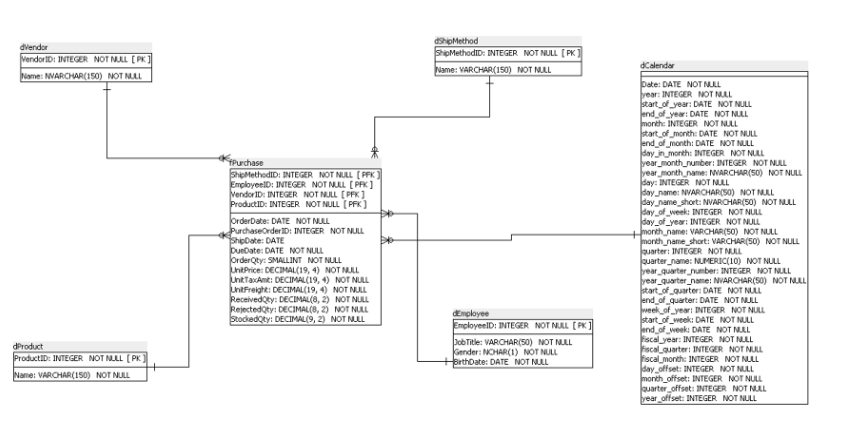
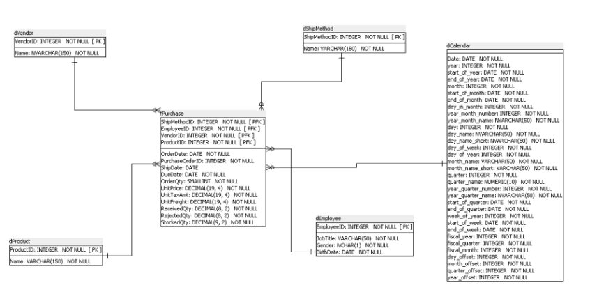

SQL
SQL Server
The goal of this project is to demonstrate how I would model a data mart using only t-sql commands, procedures and views.
The goal of this project is to demonstrate how I would model a data mart using only t-sql commands, procedures and views.
